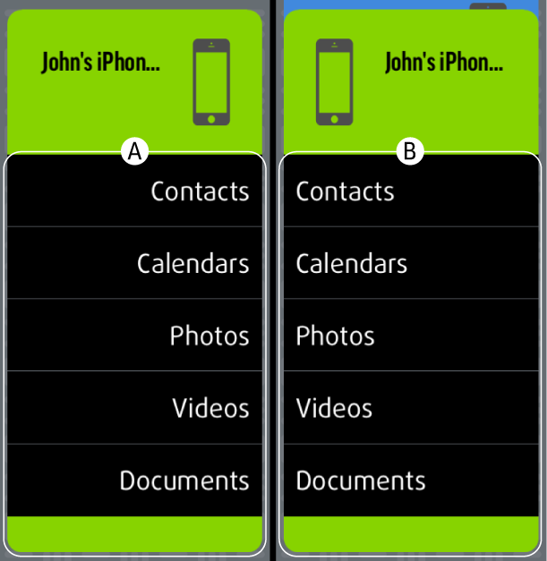

Manuelle Sicherung und Wiederherstellung auf Originalgerät
1. Sicherung des Geräts
Ziehen Sie rechts Symbol (A) auf Symbol (B).
2. Wiederherstellung des Geräts
Ziehen Sie links Symbol (B) auf Symbol (A).
3. Sicherung einer Kategorie
Für die Sicherung einer einzelnen Kategorie, ziehen Sie sie von (A) auf (B) (von links nach rechts).

4. Wiederherstellung einer Kategorie
Für die Sicherung einer einzelnen Kategorie, ziehen Sie sie von (B) auf (A) (von rechts nach links).